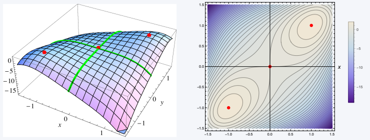

Kapitel 11 Optimierung II
Wir beschäftigen uns nun mit Extremwertfindung für Funktionen mehrerer Variablen.
11.1 Bedingungen erster Ordnung
Wie im univariaten Fall werden wir für die Bestimmung von Extremwerten von multivariaten Funktionen \(f (x_1, ... , x_n)\) zunächst stationäre Punkte identifizieren.
Der Einfachheit halber verwenden wir auch hier die Notation \(x = (x_1, ... , x_n)\) für Punkte im \(\mathbb{R} ^n\).
Ohne Nebenbedingungen ist die mögliche Lösungsmenge eines Optimierungsproblems der gesamte \(\mathbb{R} ^n\). Mit Nebenbedingungen ist die Lösungsmenge eingeschränkt auf eine Teilmenge \(X \subset \mathbb{R} ^n\).
Definition 6.2 (Stationäre Punkte) Die Funktion \(f: \mathbb{R} ^n \rightarrow \mathbb{R}\) hat einen stationären Punkt an der Stelle \(x^∗ = (x_1^∗ , \ldots , x_n ^∗ )\), falls gilt:
\[\begin{align}f_1(x_1^∗ , \ldots , x_n^∗) &= 0\\ f_2(x_1^∗ , \ldots , x_n^∗) &=0\\ &\vdots\\ f_n(x_1^∗ , \ldots , x_n^∗) &= 0 \end{align}\]
Wie im eindimensionalen Fall sind nicht alle stationären Punkte Extremwerte.
Neben Wendepunkten existieren im \(\mathbb{R} ^n\) sogenannte Sattelpunkte, an denen die Funktion ein Maximum in einer Richtung und ein Minimum in einer anderen Richtung annimmt.
 Wie im univariaten Fall ist eine notwendige Bedingung dafür, dass \(f\) ein Minimum oder Maximum an der Stelle \(x^∗\) hat, dass \(x^∗\) ein stationärer Punkt ist.
Wie im univariaten Fall ist eine notwendige Bedingung dafür, dass \(f\) ein Minimum oder Maximum an der Stelle \(x^∗\) hat, dass \(x^∗\) ein stationärer Punkt ist.
Theorem 11.1 (Notwendige Bedingungen) Es sei \(f: \mathbb{R} ^n \rightarrow \mathbb{R}\) differenzierbar. Falls \(f\) ein lokales Maximum \(\color{red}{\text{(ein lokales Minimum)}}\) an der Stelle \(x^∗ = (x_1^∗ ,\ldots. , x_n ^∗)\) hat, also
\(f (x_1^∗ , \ldots , x_n^∗) ≥ f (x_1,\ldots , x_n)\) \(\color{red}{f (x_1^∗ , \ldots , x_n^∗) \leq f (x_1,\ldots , x_n)}\)
für alle Punkte \((x_1, \ldots , x_n)\) in einer Umgebung von \(x^∗\) , dann gilt
\[\begin{align*}f_1(x_1^∗, \ldots , x_n ^∗ )& = 0\\ f_2(x_1^∗, \ldots , x_n^∗ )& = 0\\ &~~~\vdots\\ f_n(x_1^∗, \ldots , x_n^∗)& = 0. \end{align*}\]

Graphik (a) zeigt die Tangentialebene am Maximum der Funktion.
Graphik (b) zeigt die Höhenlinien, also eine Sicht von oben, bei der die Funktionswerte auf jeder Linie gleich sind.
Beispiel 11.1 (Preisdiskriminierung im Monopol) Ein Monopolist verkauft ein identisches Produkt in zwei getrennten Märkten.
Die inversen Nachfragefunktionen sind
\(p_1(x_1) = 12 − x_1\)
\(p_2(x_2) = 10 − 2x_2\),
wobei \(p_i\) die Preise und \(x_i\) die Outputmengen auf den jeweiligen Märkten sind.
Die Kostenfunktion der Firma ist \(C(x_1,x_2) = 1/2 (x_1 + x_2)^2\) .
Die Gewinnfunktion ist folglich
\(\pi(x_1,x_2) = p_1x_1 + p_2x_2 − C(x_1,x_2) = 12x_1 − x_1^2 + 10x_2 − 2x_2^2 − 1/2 (x_1 + x_2)^2\) .
Die Bedingungen erster Ordnung lauten:
\(\pi_1(x_1^∗,x_2^∗) = 12 − 2_1x^∗ − (x_1^∗ + x_2^∗ ) = 0\) \(\pi_2(x_1^∗,x_2^∗) = 10 − 4x_2^∗ − (x_1^∗ + x_2^∗ ) = 0\)
Diese Bedingungen zeigen, dass zur Gewinnmaximierung notwendigerweise die Grenzerträge in beiden Märkten gleich sein müssen, da die Grenzkosten \((x_1^∗ + x_2^∗ )\) identisch sind.
Die gewinnmaximierenden Angebotsmengen sind dann: \(x_1^∗ = 3,57\) und \(x_2^∗ = 1,29\) (höherer Verkauf in Markt \(1\)).
Die optimalen Preise sind \(p_1^∗ = 8,43\) und \(p_2^∗ = 7,43\) (Preis höher in Markt \(1\)).
11.2 Bedingungen zweiter Ordnung
Die Bedingungen erster Ordnung sind lediglich notwendig, aber nicht hinreichend für einen Extremwert.
Bedingungen zweiter Ordnung ermöglichen die Prüfung, ob es sich bei einem stationären Punkt um ein Minimum oder ein Maximum handelt.
Intuitiv: Falls an einem stationären Punkt \(x^∗\) eine kleine Bewegung in eine beliebige Richtung weg von \(x^∗\) mit einem abnehmenden (zunehmenden) Funktionswert einhergeht, dann hat \(f\) an der Stelle \(x^∗\) ein lokales Maximum (Minimum). Wir betrachten die Bedingungen zweiter Ordnung im bivariaten Fall (\(n = 2\)).
Theorem 6.2 (Bedingungen zweiter Ordnung) Es sei \(f: \mathbb{R} ^2 \rightarrow \mathbb{R}\) eine Funktion mit stetigen zweiten partiellen Ableitungen in einer Umgebung des stationären Punkts \((x_1^∗ , x_2^∗ )\).
Setze (Interpretation: \(D\) ist die Determinante der Hesse-Matrix.)
\[D = f_{x_1x_1} (x_1^∗ ,x_2^∗ ) f_{x_2x_2} (x_1^∗,x_2^∗ ) − f_{x_1x_2}^2 (x_1^∗ ,x_2^∗ ) .\]
Falls \(D > 0\) und \(f_{x_1x_1} (x_1^∗ ,x_2^∗ ) > 0\), dann hat \(f\) an der Stelle \((x_1^∗ ,x_2^∗ )\) ein lokales Minimum.
Falls \(D > 0\) und \(f_{x_1x_1} (x_1^∗ ,x_2^∗ ) < 0\), dann hat \(f\) an der Stelle \((x_1^∗ ,x_2^∗ )\) ein lokales Maximum.
Falls \(D < 0\), dann hat \(f\) an der Stelle \((x_1^∗ ,x_2^∗ )\) einen Sattelpunkt.
Falls \(D = 0\), dann ist eine Schlussfolgerung nicht möglich.
Beispiel 11.2 (Stationäre Punkte I) Wir bestimmen die lokalen Extrema und Sattelpunkte der Funktion
\(f (x,y) = 3x^2 − 2xy + y^2 − 8y\).
Die Bedingungen erster Ordnung lauten
\(f_x=6x − 2y = 0\) \(f_y=−2x + 2y − 8 = 0\)
LGS: \(f_x+f_y\) \(4x=8\) \(x^*=2, y^*=6\) Es gibt einen stationären Punkt an der Stelle \((x,y) = (2,6)\).
Die Hesse-Matrix ist \(\begin{bmatrix} f_{xx} \ \ f_{xy} \\ f_{xy} \ \ f_{yy} \end{bmatrix} = \begin{bmatrix} 6 \ \ \ -2 \\ -2 \ \ \ \ 2\end{bmatrix}\)
Also: \(D = 6 \cdot 2 − (−2)^2 = 12 − 4 = 8 > 0\).
Zusammen mit \(f_{xx} = 6 > 0\) folgt, dass \(f\) an der Stelle \((2,6)\) ein lokales Minimum hat.
Beispiel 11.3 (Stationäre Punkte II) Wir bestimmen alle lokalen Extrema und Sattelpunkte von
\(f (x,y) = 4xy − x^4 − y^4\) .
Die Bedingungen erster Ordnung sind
\(f_x=4y − 4x^3 = 0\), also \(y = x^3\) \(f_y=4x − 4y^3 = 0\), also \(x = y^3\)
Die stationären Punkte sind \((0,0)\), \((1,1)\), \((−1, − 1)\).
Aus \(f_{xx} (x,y) = −12x^2\) , \(f_{yy} (x,y) = −12y^2\) , \(f_{xy} (x,y) = 4\) folgt
\[\begin{equation*} \begin{array}[t]{c|cccc} \hline % (x_0,y_0) & f_{xx}(x_0,y_0) & f_{yy}(x_0,y_0) & f_{xy}(x_0,y_0) & D=f_{xx} f_{yy} - f_{xy}^2\\\hline (0,0) & 0 & 0 & 4 & -16\\ (1,1) & -12 & -12 & 4 & 128\\ (-1,-1) & -12 & -12 & 4 & 128\\\hline \end{array} \end{equation*}\]
Es folgt, dass \(f\) an den Stellen \((1,1)\) und \((−1, − 1)\) lokale Maxima hat; hingegen ist an der Stelle \((0,0)\) ein Sattelpunkt.

**Verallgemeinerung auf Funktionen von \(n\) Variablen^*
Um auf den allgemeinen Fall mit \(n\) Variablen zu schließen, beachte man zuerst, dass \(D\) die Determinante der Hesse-Matrix ist.
Zusätzlich entspricht \(f_{xx}\) der Determinante der \(1 × 1\) Untermatrix der Hesse-Matrix, die in Zeile 1 und Spalte 1 beginnt.
Im allgemeinen Fall mit \(n\) Variablen gilt, dass die Determinanten der \(k × k\) Untermatrizen der Hesse-Matrix gemeinsam bestimmen, ob ein stationärer Punkt einen Maximum oder einem Minimum entspricht.
Falls die Determinanten alle positiv sind, dann ist die Hesse-Matrix positiv definit und die Funktion hat an dem stationären Punkt ein Minimum.
Sind die Vorzeichen der Determinanten alternierend beginnend mit einem negativen Vorzeichen, dann ist die Hesse-Matrix negativ definit und die Funktion hat an dem stationären Punkt ein Maximum.
Aufgabe 11.1 (Extrema von multivariater Funktion) Für die Funktion:
\[f(x,y)=x^2+ y^2+xy+x+5y\]
bestimme Maximum und Minimum-Punkte.
Antwort
- Die partiellen Ableitungen sind:
\[f_x(x,y)=2x+y+1,\] \[f_y(x,y)=2y+x+5.\]
Bestimme die Nullstellen des Gradienten:
die beiden partiellen Ableitungen gleich Null setzt, ergibt das System: \[2x+y+1 = 0,\] \[x+2y+5=0.\]
Mittels Gauß-Elimination (z.B. die zweite Gleichung mit \(2\) multiplizieren und von der ersten Gleichung substrahieren): \[2x+y+1 = 0,\] \[-\] \[2x+4y+10=0.\] \[\leadsto -3y-9=0\rightarrow y=-3.\]
Einsetzen in die zweite Gleichung liefert: \[x+2(-3)+5=0\rightarrow x=1.\]
Also die einzige Nullstelle des Gradientes ist: \[x=1,y=-3.\]
Prüfe, ob Maximum oder Minimum:
Hesse-Matrix: \[H(x,y)=\begin{pmatrix}2&1\\1&2\end{pmatrix}\]
\(\det(H)\) \[\det(H)=2\cdot 2-1\cdot1 = 1>0\]
\(f_{xx}\) \[f_{xx}(x,y)=2 >0,\]
Also ist der stationäre Punkt das Minimum der Funktion.
11.3 Optimierung unter Nebenbedingungen: Lagrange-Methode
Wir wenden uns nun dem folgenden Problem zu:
\[\max_{x_1,x_2} f (x_1,x_2),\]
unter der Bedingung, dass
\[g(x_1,x_2) = 0 .\]
\(f\) wird Zielfunktion genannt.
\(g = 0\) ist die Nebenbedingung oder Restriktion.
Wir nehmen durchgehend an, dass \(f\) und \(g\) stetig differenzierbar sind. (Eine Funktion ist stetig differenzierbar, wenn sie differenzierbar ist und die Ableitung stetig ist.)
Zur Lösung des Problems führen wir die neue Variable \(\lambda\) ein, den sogenannten Lagrange-Multiplikator und bilden die Lagrange-Funktion:
\[\mathcal{L} (x_1,x_2, \lambda)=f(x_1,x_2)+ \lambda g(x_1,x_2).\]
- Nun bestimmt man die stationären Punkte von \(\mathcal{L}\) bezüglich der Variablen \(x_1,x_2\) und \(\lambda\) über die Bedingungen erster Ordnung:
\[\begin{align}\frac{ \partial \mathcal{L} }{ \partial x_1 } &=f_1(x_1^*,x_2^*)+ \lambda ^*g_1(x_1^*,x_2^*)=0 \\ \frac{ \partial \mathcal{L} }{ \partial x_2 } &=f_2(x_1^*,x_2^*)+ \lambda ^*g_2(x_1^*,x_2^*)=0 \\ \frac{ \partial \mathcal{L} }{ \partial \lambda } &=g(x_1^*,x_2^*)=0. \end{align}\]
Beachte, dass \(\frac{ \partial \mathcal{L} }{ \partial \lambda } =0\) gerade die Nebenbedingung ergibt.
Damit die Lagrange-Methode anwendbar ist, muss gelten: \(g_1(x_1^* ,x_2^*) \neq 0\) oder \(g_2(x_1^∗ ,x_2^∗) \neq 0\), also \((x_1^∗ ,x_2^∗ )\) ist kein stationärer Punkt von \(g\))
Theorem 11.2 (Lagrange Methode) Es seien \(f\) und \(g\) stetig differenzierbar. Ferner sei \((x_1^∗, x_2^∗)\) eine Lösung des Problems
\[\max_{x_1,x_2} f (x_1,x_2)\]
unter der Bedingung \[g(x_1,x_2) = 0.\]
Man nehme weiterhin an, dass \((x_1^∗,x_2^∗)\) kein stationärer Punkt von \(g\) sei.
Dann existiert eine reelle Zahl \(\lambda^∗\) , sodass \((x_1^∗, x_2^∗,\lambda^∗)\) ein stationärer Punkt der Lagrange-Funktion
\[\mathcal{L} (x_1,x_2, \lambda)=f(x_1,x_2)+ \lambda g(x_1,x_2) \]
ist.
Mit anderen Worten: an der Stelle \((x_1^∗, x_2^∗,\lambda^∗)\) gilt:
\[\begin{align}\frac{ \partial \mathcal{L} }{ \partial x_1 } &=0,\\ \frac{ \partial \mathcal{L} }{ \partial x_2 } &=0,\\ \frac{ \partial \mathcal{L} }{ \partial \lambda } &=0. \end{align}\]
Beispiel 11.4 (Optimierung mit Lagrange-Methode) Wir lösen das folgende Optimierungsproblem:
\[\max_{ x_1,x_2} x_1^{0,25} x_2^{0,75}\]
unter der Bedingung, dass
\[100 − 2x_1 − 4x_2 = 0.\]
Die Lagrange-Funktion ist
\[\mathcal{L} (x_1,x_2, \lambda)= x_1^{0,25}x_2^{0,75} + \lambda(100-2x_1-4x_2).\]
Die Bedingungen erster Ordnung lauten:
\[\begin{align}0,25x_1^{ −0,75} x_2{ 0,75} − 2\lambda &= 0\\ 0,75x_1^{ 0,25} x_2^{−0,25} − 4\lambda &= 0\\ 100 − 2x_1 − 4x_2 &= 0 \end{align}\]
Eliminieren von \(λ\) in den ersten beiden Gleichungen ergibt
\(x_2 = 3/ 2 x_1\)
und Substituieren in die dritte Gleichung ergibt
\(x_1^∗ = 12,5\) und \(x_2^∗ = 18,75\).
Für \(λ^∗\) erhalten wir \(λ^∗ = 0,25x_1^{ −0,75} x_2^{ 0,75} /2 = 0,75x_1^{ 0,25} x_2^{ −0,25} /4 = 0,169425\).

Die grüne Linie enthält alle Funktionswerte, die die Restriktion erfüllen.
Der rote Punkt markiert das Maximum auf der Restriktionsmenge.
Im Allgemeinem gilt:
- Der Wert \(\lambda^∗\) ist gegeben als
\[\lambda ^*= -\frac{ f_1(x_1^*,x_2^*) }{ g_1(x_1^*,x_2^*) } = -\frac{ f_2(x_1^*,x_2^*) }{ g_2(x_1^*,x_2^*) }.\]
Der Wert des Lagrange-Multiplikators \(\lambda^ ∗\) (ggfs. multipliziert mit \(−1\) - dies hängt von der Form der Nebenbedingung ab, z.B. \(x+y-100=0\) und \(100-x-y=0\)) entspricht der Sensitivität der optimalen Lösung gegenüber einem leichten Lockern der Nebenbedingung.
Dieser Wert wird auch Schattenpreis der Nebenbedingung genannt.
Die Bedingungen zweiter Ordnung werden anhand der Hesse-Matrix der Lagrange-Funktion aufgestellt. DIese besteht aus den partiellen Ableitungen zweiter Ordnung der Lagrange-Funktion:
\[H(x,y,\lambda)= \begin{pmatrix} \mathcal L_{11}& \mathcal L_{12}& \mathcal L_{13}\\ \mathcal L_{21}& \mathcal L_{22}& \mathcal L_{23}\\ \mathcal L_{31}& \mathcal L_{32}& \mathcal L_{33} \end{pmatrix},\]
wo \(\mathcal L_{11}=\frac{\partial^2\mathcal L}{\partial x_1^2},\) \(\mathcal L_{21}=\frac{\partial^2\mathcal L}{\partial x_2\partial x_1},\) \(\mathcal L_{31}=\frac{\partial^2\mathcal L}{\partial \lambda\partial x_1},\) usw.
Wenn man die Werte \(x^*,y^*,\lambda^*\) in die Hesse-Matrix einsetzt, erhält man \(H^*\):
\[H^*= \begin{pmatrix} \mathcal L^*_{11}& \mathcal L^*_{12}& \mathcal L^*_{13}\\ \mathcal L^*_{21}& \mathcal L^*_{22}& \mathcal L^*_{23}\\ \mathcal L^*_{31}& \mathcal L^*_{32}& \mathcal L^*_{33} \end{pmatrix} = \begin{bmatrix} f_{11}+ \lambda^*g_{11} \ \ \ f_{12}+ \lambda ^*g_{12} \ \ \ g_1 \\ f_{21}+ \lambda^*g_{21} \ \ \ f_{22}+ \lambda ^*g_{22} \ \ \ g_2 \\ g_1 \ \ \ \ \ \ \ \ \ \ \ \ \ \ \ \ \ \ g_2 \ \ \ \ \ \ \ \ \ \ \ \ \ \ \ \ \ \ \ 0 \end{bmatrix}\]
- Die Determinante dieser \(3 × 3\) Hesse-Matrix lautet (Jägerzaunregel, siehe 9.17):
\[\begin{align}\det(H^*) &= \mathcal L^*_{11}(\mathcal L^*_{22}\mathcal L^*_{33}-\mathcal L^*_{23}\mathcal L^*_{32})-\mathcal L^*_{12}(\mathcal L^*_{21}\mathcal L^*_{33}-\mathcal L^*_{23}\mathcal L^*_{31}) +\mathcal L^*_{13}(\mathcal L^*_{21}\mathcal L^*_{32}-\mathcal L^*_{22}\mathcal L^*_{31}) \\ &=\mathcal L^*_{11} \cdot (-\mathcal L^*_{23}\mathcal L^*_{32})-\mathcal L^*_{12} \cdot (-\mathcal L^*_{23}\mathcal L^*_{31}) + \mathcal L^*_{13}(\mathcal L^*_{21}\mathcal L^*_{32}-\mathcal L^*_{22}\mathcal L^*_{31}) \\ &=-(f_{11}+ \lambda^*g_{11}) \cdot g_2^2+ 2(f_{12}+ \lambda ^*g_{12}) \cdot g_2g_1-(f_{22}+ \lambda^*g_{22})g_1^2. \tag{11.1} \end{align}\]
In der Praxis, wird meist mit Software-Tools kalkuliert (z.B. Excel).
Theorem 11.3 (Hinreichende Bedingungen für ein lokales Maximum/Minimum) Es sei \((x_1^∗, x_2^∗ ,\lambda^∗ )\) ein stationärer Punkt der Lagrange-Funktion
\[\mathcal{L} (x_1,x_2, \lambda)=f(x_1,x_2)+ \lambda g(x_1,x_2).\]
Dann gilt:
\((x_1^∗ ,x_2^∗ )\) ist ein lokales Maximum von \(f\) unter der Restriktion \(g(x_1,x_2) = 0\), falls \(\det(H^∗) > 0\);
\((x_1^∗ ,x_2^∗ )\) ist ein lokales Minimum von \(f\) unter der Restriktion \(g(x_1,x_2) = 0\), falls \(\det(H^∗) < 0\).
Beispiel 11.5 (Optimierung mit der Lagrange Methode) Wir führen das vorherige Beispiel 11.4 fort.
Die Hesse-Matrix lautet:
\(H^*(x_1,x_2)= \begin{bmatrix} - \frac{0,1875x_2^{0,75}}{x_1^{1,75}} \ \ \frac{0,1875}{x_1^{0,75}x_2^{0,25}} \ \ -2 \\ \frac{0,1875}{x_1^{0,75}x_2^{0,25}} \ \ -\frac{0,1875x_1^{0,25}}{x_2^{1,25}} \ \ -4 \\-2 \ \ \ \ \ \ \ \ \ \ \ \ \ -4 \ \ \ \ \ \ \ \ \ \ \ \ \ \ \ \ \ 0 \end{bmatrix}\)
Die Determinante an der Stelle \((x_1^∗ , x_2^∗ , λ^∗ )\) ist \(\det(H^*) = 0,5783\).
Also hat \(f\) ein Maximum an der Stelle \((x_1^∗ , x_2^∗ )\).
Beispiel 11.6 (Nutzenmaximierung) Wir betrachten das Beispiel der Nutzenmaximierung 1.1 aus Kapitel 1.
Das zu lösende Problem lautet:
\[\max_{x,y} U(x,y) = \max_{x,y} \left(\sqrt x + \sqrt y\right),\]
unter der Bedingung \(x + 3y = 100\) (Budgetrestriktion).
Für die Lagrange-Methode schreiben wir die Budgetrestriktion in der Form \(100 − x − 3y = 0\).
Die Lagrange-Funktion ist:
\[\mathcal{L} (x,y, \lambda)= \sqrt{x} + \sqrt{y} + \lambda (100-x-3y).\]
Die Bedingungen erster Ordnung sind:
\[\begin{align}\frac{ \partial \mathcal{L} }{ \partial x } (x,y, \lambda )&= \frac{1}{2 \sqrt{x} } - \lambda =0 \\ \frac{ \partial \mathcal{L} }{ \partial y } (x,y, \lambda )&= \frac{1}{2 \sqrt{y} } - 3\lambda =0 \\ \frac{ \partial \mathcal{L} }{ \partial \lambda } (x,y, \lambda )&= 100-x-3y =0. \end{align}\]
Die Lösung ist \(x^∗ = 75\), \(y^∗ = 100/12 = 8,3333\) und \(λ^∗ = 0,05774\).
Hierbei drückt \(\lambda^∗\) den Grenznutzen aus, d.h. die Änderungsrate des optimalen Nutzen bei einer Lockerung der Budgetrestriktion.
Die Hesse-Matrix is:
\[H(x,y,\lambda)=\begin{pmatrix}\frac{\partial^2\mathcal L}{\partial x^2}& \frac{\partial^2\mathcal L}{\partial x\partial y}& \frac{\partial^2\mathcal L}{\partial x\partial\lambda}\\ \frac{\partial^2\mathcal L}{\partial y\partial x}& \frac{\partial^2\mathcal L}{\partial y^2}& \frac{\partial^2\mathcal L}{\partial y\partial\lambda}\\ \frac{\partial^2\mathcal L}{\partial \lambda\partial x}& \frac{\partial^2\mathcal L}{\lambda\partial y}& \frac{\partial^2\mathcal L}{\partial\lambda^2} \end{pmatrix} = \begin{pmatrix}-\frac{1}{4x^{3/2}}& 0& -1\\ 0& -\frac{1}{4y^{3/2}}& -3\\ -1& -3& 0 \end{pmatrix} \]
Das Einsetzen von \(x^∗ = 75\), \(y^∗ = 100/12 = 8,3333\) und \(λ^∗ = 0,05774\) ergibt: \[H^*=\begin{pmatrix}-0,0003849& 0& -1\\ 0& -0,0103923& -3\\ -1& -3& \end{pmatrix} \]
Die Determinante der Hesse-Matrix lautet (Formel (11.1)):
\[\det(H^*) = \frac{1}{4(x^*)^{3/2}} \cdot (-3)^2 + \frac{1}{4(y^*)^{3/2}} \cdot (-1)^2 = 0,0139>0,\]
oder in Excel:
also handelt es sich um ein Maximum.
Aufgabe 11.2 (Lagrange Methode) Es sei \[f(x,y)=3x+2y+5,\] wobei \(x>0\), \(y>0\) gilt.
Bestimmen Sie den Punkt, in dem ein Extremum von \(f\) unter der Nebenbedingung \[x^2+2y^2=275\] erreicht wird. Ist dieser Extremum ein Maximum oder ein Minimum?
Antwort
Die Lagrange-Funktion: \[\mathcal L(x,y,\lambda) = 3x+2y+5+\lambda(275-x^2-2y^2).\]
Die Bedingungen erster Ordnung:
\[\begin{align}\frac{ \partial \mathcal{L} }{ \partial x } (x,y, \lambda )&= 3 - 2\lambda\cdot x =0 \leadsto x=\color{blue}{\frac3{2\lambda}} \\ \frac{ \partial \mathcal{L} }{ \partial y } (x,y, \lambda )&= 2-4\lambda \cdot y=0 \leadsto y=\frac2{4\lambda} = \color{red}{\frac 1{2\lambda} }\\ \frac{ \partial \mathcal{L} }{ \partial \lambda } (x,y, \lambda )&= 275-x^2-2y^2 =0. \end{align}\]
- Das Einsetzen der Ausdrücke für \(x,y\) aus den ersten beiden Gleichungen in die letzte Gleichung liefert:
\[\begin{align}275 - \left(\color{blue}{\frac3{2\lambda}}\right)^2 - 2\cdot \left(\color{red}{\frac1{2\lambda}}\right)^2 &=0\\ 275 - \frac 9{4\lambda^2} - \frac 2{4\lambda^2}&=0\\ -\frac{11}{4\lambda^2}&=-275\\ \lambda^2&=\frac{-11}{-275\cdot 4}=0,01=(0,1)^2\\ \lambda^*&=0,1. \end{align}\]
- Das Einsetzen von \(\lambda^*=0,1\) in die Ausdrücke für \(x,y\) ergibt:
\[x^*=\color{blue}{\frac3{2\cdot 0,1}}=15\text{ und } y^*=\color{red}{\frac 1{2\cdot 0,1} }=5.\]
- Die Hesse-Matrix ist:
\[H(x,y,\lambda)=\begin{pmatrix}-2\lambda&0&-2x\\0&-4\lambda&-4y\\-2x&-4y&0\end{pmatrix}\]
- \(H^*=H(x^*,y^*,\lambda^*)\) (Setze die gefundenen Werte für \((x^*,y^*,\lambda^*)\) in die Hesse-Matrix ein):
\[H^*=H(x^*,y^*,\lambda^*)=\begin{pmatrix}-0,20&0&-30\\0&-0,4&-20\\-30&-20&0\end{pmatrix}\]
- Die Determinante der Hesse-Matrix ist (rechne in Excel): \[\det(H^*) = 440>0\]
Also liegt ein Maximum in \((x^*,y^*,\lambda^*)\) vor.